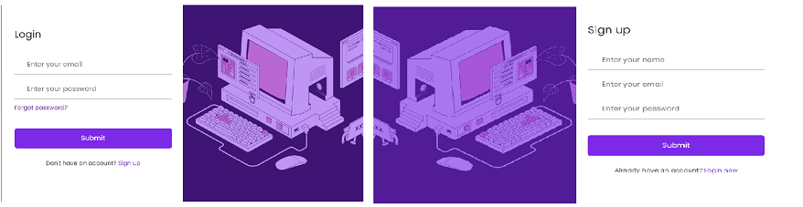

Cerințele site-ului
1. Introducere
1.1. Scop
Scopul aplicației "InformatiX" este de a furniza un mediu interactiv și educațional pentru elevii de gimnaziu și liceu, pentru învățarea programării prin intermediul rezolvării de probleme. Utilizatorii vor avea acces la o varietate de probleme propuse de profesori, clasificate în funcție de nivelul de studiu (clasa 9/10/11), de dificultate (probleme ușoare, medii, dificile), și de capitolul pe care se bazează problema (backtracking, șiruri de caractere etc.). Elevii pot vizualiza aceste probleme atât înregistrându-se, cât și fără a fi înregistrati, iar rezolvarea acestora presupune apartenența la o clasă cu un profesor asignat și trimiterea soluțiilor respective spre a fi corectate de către profesor. Acestia vor putea lasa comentarii pentru colegi la fiecare problema si vor putea oferi un rating de la 1 la 5 stele pentru ea. Fiecare problema poate fi exportata folosind butonul de share. Profesorii vor avea posibilitatea să creeze și să administreze clase, să adauge elevi în aceste clase și să atribuie teme elevilor prin propunerea sau selectarea de probleme existente în aplicație. Ei vor putea, de asemenea, să evalueze soluțiile trimise de elevi și să ofere feedback individual. Pe lângă funcționalitatea de bază, aplicația va genera rapoarte care oferă statistici detaliate pentru utilizatori, cum ar fi numărul total de probleme rezolvate, câte dintre acestea au fost corecte și câte au fost încercate. De asemenea, vor exista rapoarte pentru fiecare problemă în parte, care vor oferi informații despre numărul de utilizatori care au încercat-o, câți au reușit să o rezolve și ratingul care a fost acordat de elevi.
Astfel, pe lângă scopul de a furniza un mediu interactiv și eficient pentru învățarea și practicarea programării pentru elevii de liceu, aplicația facilitează comunicarea și colaborarea între elevi și profesori și oferă o modalitate utilă pentru evaluarea și monitorizarea progresului în învățare.
1.2. Publicul vizat
Platforma noastră va fi destinată în primul rând elevilor care studiază informatica în liceu și gimnaziu, studenților care doresc să aprofundeze noțiunile prin exersare, și până la urmă oricăror pasionați care își doresc să învețe mai mult. Administratorii paginii vor avea orice rol, se vor asigura de buna funcționare a site-ului și că legătura elevi-profesor implică o comunicare eficientă. Nu în ultimul rând, profesorul, este cel care evaluează elevii, le propune teme, comunică cu aceștia prin intermediul platformei despre soluții optime la rezolvări. Platforma este una potrivită atât pentru elevii care doresc să lucreze cât mai mult, cât și pentru profesori pentru a evalua cât mai ușor munca elevilor.
1.3. Product scope
Obiectivul major este de a sprijini educația și dezvoltarea competențelor tehnice în rândul tinerilor, pregătindu-i pentru oportunități viitoare în domeniul tehnologiei și informaticii.
Funcționalitățile majore ale aplicației sunt:
Propunerea și Aprobarea de Probleme:
Profesorii pot propune probleme informatice care vor fi supuse aprobării administratorilor. Aceste probleme pot fi etichetate cu diverse TAG-uri pentru a facilita căutarea și filtrarea.
Crearea și Gestionarea Claselor:
Profesorii pot crea clase și adăuga elevii în aceste clase folosind identificatori precum email sau username.
Atribuirea de Teme:
Profesorii pot atribui teme elevilor fie propunând probleme noi, ce vor fi aprobate de administratori, fie selectând dintr-o bază de date existentă de probleme.
Rezolvarea Problemelor și Evaluarea:
Elevii pot rezolva problemele și pot trimite soluțiile lor pentru evaluare de către profesor. De asemenea, ei pot oferi comentarii și ponturi colegilor sau pot marca problemele cu un număr de stele pentru a indica nivelul lor de dificultate sau calitate.
Accesibilitatea prin API și Export/Import de Probleme:
Problemele pot fi accesate de alte aplicații web prin intermediul unui API, iar problemele pot fi exportate/importate în formate deschise, cum ar fi XML, JSON sau CSV.
2. Prezentarea aplicației
2.1. Arhitectura abordată
Aplicația dezvoltă o structură ușor de înțeles, bine implementată și care facilitează comunicarea dintre componenta de frontend(la nivelul interfeței de utilizator) și cea de backend(la nivel de server). S-a adoptat un design-pattern arhitectural, Model-View-Controller, motivația venind din ideea de a separa logica de prezentare a datelor (Model), interfața utilizatorului (View), și logica de control a aplicației (Controller). Cele 3 componente facilitează întreținerea codului, permite un acces mai controlat în cadrul fișierelor și este ușor de înțeles.
2.2. Structura fișierelor
Așa cum s-a menționat anterior despre modelul MVC, aplicația are în componență 2 foldere esențiale: "src" - care deține logica de structurare din cadrul arhitecturii, și "public" - care conține elementele statice - și anume fisierele .css specifice paginilor, imagini, fonturi, favicons etc.
2.2. Cum funcționează procesul de logare - demo(important!)
Important, în procesul demo s-a implementat o logare minimalistă, bazată pe 2 cuvinte cheie: admin și profesor. Pentru elev am folosit orice alt identificator, mai puțin "elev" și "profesor".
Pentru a diferenția utilizatorii și a crea conținuturi în pagină diferite pentru fiecare în parte, aceasta din nevoia de a nu face pagini diferite pentru fiecare, am abordat o modalitate de a stoca o variabilă userType în URL-ul paginii, pe care am trimis-o de la fiecare pagină către alta, și în fiecare pagină unde aveam de creat conținut diferit pentru fiecare categorie de utilizatori, am parsat acea valoare în string și apoi am modelat mai departe informația în funcții de JavaScript de display.
Deci, în procesul de logare, a se completa la secțiunea "email" cu "profesor" - pentru categoria de profesor , "admin" pentru categoria de administrator, si orice altceva pentru categoria de user obișnuit.2.4. Interfața utilizatorului
Pagina de index
Pagina de "index" a aplicației oferă o scurtă descriere a site-ului și a facilităților lui, răspunde la câteva dintre curiozitățile cele mai mari ale unui utilizator nou, și de asemenea permite utilizatorilor să se logheze în aplicație sau să-și facă un cont nou. S-a utilizat modul de derulare prin slide-uri a conținutului, celelalte pagini păstrând varianta clasică de scroll.

Formularul de login este adresat oricărui tip de utilizator; în urma completării acestuia se vor face verificările în baza de date și utilizatorul va avea acces la cont. Similar și pentru meniul de înregistrare.
Meniul de înregistrare va fi adresat doar utilizatorilor de tip "elevi", iar mai apoi un user "elev" poate da upgrade la "profesor" în urma completării unui formular care va fi verificat de administratori. Rolul de administrator este unul privilegiat, deținut de ownerul produsului software.
În urma realizării cu succes a procesului de logare, utilizatorul va fi redirecționat către pagina "logged-page", mai pe scurt meniul principal care leagă celelalte pagini între ele într-o structură arborescentă.
Pagina conține o abstractizare a principalelor funcționalități ale produsului software, afișate în secțiuni în cadrul paginii. Contând foarte mult modul de detaliere a funcționalităților aplicației web, s-a ales acest mod de afișare a secțiunilor pe pagină și practic așa ne asigurăm că un utilizator nou înregistrat va avea acces la toate informațiile de care are nevoie să se acomodeze cu modul de lucru. Considerăm că un meniu detaliat (în care să se menționeze cât mai multe detalii despre site) atinge orice obiective din partea producătorilor software.

Navbar-ul, specific header-ului, reprezintă "harta de nevigare" din cadrul aplicației. Acesta are caracter static, elementele din Navbar-ul vizibile din orice pagină a utilizatorului logat, și este dezvoltat responsive în crearea unui "menu-button" specific dispozitivelor cu rezoluție mai mică.

Pagina de profil

Această pagină, indispensabilă aplicației, reprezintă modalitatea prin care utilizatorul îsi poate vizualiza datele personale din cont, poate efectua anumite modificări care ulterior vor fi transmise către baza de date, poate să-și modifice parola, și poate transmite un formular către administrator prin care solicită rol de profesor, cu dovadă. Tododată, în secțiunea de profil, un utilizator poate să-și verifice statisticile: câte probleme a rezolvat, câte a încercat, și apoi să-și planifice singur ce ar mai putea rezolva sau primi din partea profesorului.
Pagina de probleme
În cadrul secțiunii de probleme, userul poate naviga către pagina specifică oricărei probleme, îi poate vizualiza enunțul, și mai apoi o poate rezolva în cadrul clasei virtuale de care ar aparține. Problemele au un anumit tag (de ex #2222), o categorie din informatică pe baza căreia vor fi afișate în pagină, și nivelul de studiu specific: clasa 9, clasa 10 sau clasa 11. Am ales această clasificare pentru a facilita modul de căutare al problemelor. Cerința majoră a aplicației stând în modul cum elevii ar putea rezolva probleme, iar profesorii evaluează și acordă note, am tratat detaliat aceste pagini specifice.
Meniul cu titlul "Adaugă o problemă" este destinat doar rolului de profesor pentru ca aceștia să poată propune probleme spre a fi înregistrate în sistem și ulterior rezolvate de elevi. Se consideră adminul că are orice rol. În general, la un produs software nu este suficient doar să fie în funcțiune și atât, mentenanța și întreținerea acestei aplicații fiind una deosebit de importantă. De aceea, diversitatea de probleme, precum și alte avantaje ale aplicației, vor veni din partea sprijinului profesorilor. Prin "Submit" (apăsarea butonului), profesorii s-au asigurat că datele introduse sunt corecte și sunt de acord cu politica de validare a problemelor, conform statutului de admin - care deține și un rol de a accepta cererea de introducere a problemei în sistem.

Această pagină se regăsește din meniul de căutare probleme, la secțiunea de "probleme clasa 9". Acest mod afișează într-un format elegant toate categoriile de probleme, iar pe fiecare din aceste categorii găsindu-se mai multe probleme. Pentru fiecare problemă se va putea vizualiza separat anumite statistici care țin de rating-ul oferit de elevi, de câți utilizatori au încercat să o rezolve și câți au rezolvat-o cu succes.
Butonul de share va fi asignat exportului într-un format open (XML / JSON / CSV, etc.).
Clasele mele

În cadrul acestei componente a aplicației este realizată interacțiunea dintre elevi și profesor. Conform cerințelor, un profesor poate deține una sau mai multe clase, acesta având un rol de a manageria clasa/clasele respective și de a lucra eficient cu elevii săi. De asemenea, un elev poate aparține la mai multe clase, acesta rezolvând independent temele pentru o clasă față de cealaltă. Am optat în modul acesta de preferințe deoarece, în practică un elev ar putea aparține de clasa la care studiază, si totodată se mai poate crea o clasă pentru elevii care participă la concursuri și olimpiade și de care elevul să aparțină simultan. Profesorul este cel care adaugă elevi într-o clasă pe baza usernameului. Tot acesta, apăsând pe butonul + poate crea o nouă clasă.

Apăsând pe fiecare clasă, profesorul poate vizualiza elevii, poate adăuga alti elevi și poate accesa secțiunea de teme pentru clasa respectivă.

Strâns legată de componenta claselor este pagina cu "Temele mele", unde un profesor fie poate propune probleme spre rezolvare, fie poate să aleagă din lista de probleme existente în sistem. O tema are un anumit deadline, poate fi pe parcurs modificată prin adăugarea de alte probleme, se vor putea adăuga comentarii din partea tuturor membrilor clasei respective, iar în urma finalizării termenului-limită, profesorul poate accesa secțiunea cu răspunsurile primite la probleme și să evalueze munca elevilor, lăsând și feedback la fiecare problemă rezolvată de aceștia.
Butonul de Evaluare presupune vizualizarea soluțiilor parțiale sau finale încărcate de elevi, profesorul având posibilitatea pe parcurs să poată da indicații sau să evalueze problemele primite, chiar dacă termenului-limită nu este sfârșit.

Adăugarea unei noi teme este un proces implicit, desfășurat de către profesor. Acesta va selecta clasa destinatară pentru tema specifică și va stabili un termen-limită, care nu va elimina tema chiar dacă acesta este atins. Totuși, termenul-limită este un indicator util pentru profesor, ajutându-l să-și organizeze eficient activitățile și să gestioneze corespunzător soluțiile trimise de elevi în vederea evaluării. Este important de menționat că aplicația este concepută pentru a fi accesibilă oricui, incluzând posibilitatea existenței claselor neoficiale, unde modalitățile de lucru pot fi diverse, conform preferințelor fiecăruia. Principalul accent se pune pe rezultatele obținute și pe eficiența pe care platforma o oferă în contextul educațional.

Procesul de adăugare a unei probleme în cadrul unei teme (prin apăsarea butonului specific) constituie un traseu inițiat de sistemul de gestiune a bazei de date. Acesta începe prin căutarea problemei fie după identificatorul unic (ID), fie după nume. După identificarea problemei, sistemul returnează răspunsul corespunzător către interfața de utilizator (frontend). În același timp, se activează funcțiile dedicate pentru prezentarea conținutului specific asociat problemei în cadrul paginii respective.

În secțiunea de evaluare, profesorul poate vedea soluțiile parțiale, respectiv finale, pentru fiecare utilizator în pagini web diferite.

În cadrul paginii de evaluare pentru un utilizator, membru clasei pentru care profesorul face verificarea soluțiilor, profesorul primeste enuntul problemei, codul sursă aferent, urmând apoi să efectueze verificările, și apoi poate încărca evaluarea pe server, elevul primind răspunsul și punctajul acordat, iar pentru server se va face un update la statisticile problemei respective pentru încă un user care a încercat să o rezolve și în situație favorabilă, este marcată ca și rezolvată cu punctaj maxim.
Important de menționat este că în această secțiune are acces și un admin, deoarece un admin poate fi și profesor, iar elevilor nu li se va afișa în interfață acest meniu.
Interfața de user(elev), are mai multe restrângeri care au fost discutate, anterior, iar una foarte importantă la nivel de interfață este la modul cum acesta poate rezolva și trimite o problemă. Prin intermediul de cod JavaScript se crează anumite verificări în funcție de tipul de user, și apoi display-ul anumitor componente Html se face după constrângerile impuse.

În această pagină, utilizatorul poate vizualiza conținutul problemei, poate trimite soluția dacă acesta este sigur pe ce a lucrat, și tot în această secțiune poate încărca anumite comentarii care pot fi văzute de toți membrii clasei și unde se pot oferi hint-uri pentru rezolvarea problemei, precum și alte comentarii.
2.4 Responsive
Aplicația este dezvoltată într-un mod responsive, astfel încât să poată fi accesată de pe orice dispozitiv, indiferent de rezoluție. Elementele de pe pagină se adaptează în funcție de dimensiunea ecranului, iar meniul de navigare este optimizat pentru dispozitivele mobile. De asemenea, butoanele și formularele sunt ușor de utilizat și de pe dispozitivele mobile. Toate dispozitivele incluse in opțiunile din prima imagine de mai jos au o interfață responsive pentru toate paginile.


3. Paleta de culori și familia de fonturi
3.1. Paleta de culori
Paleta de culori aleasă se bazează pe nuanțe de violet și nuanțe bazate pe complementara sa (galben), împreună cu clasicele alb și negru. Motivația din spatele acestei alegeri este faptul că violet este o culoare vizibilă, puternică, închisă și contrastantă împreună cu galbenul. Violetul este cunoscut ca fiind o culoare ce stimulează concentrarea și învățarea și captează atenția utilizatorului spre deosebire de alte culori mai fade. Combinate, culorile din această paletă oferă o multitudine de combinații în ceea ce privește gradienturile și alte efecte vizuale atractive pentru utilizatori. Am luat în considerare și persoanele color-blind, contrastul fiind vizibil și pentru acestea.
3.2. Familia de fonturi
Familia de fonturi aleasă este Poppins. Poppins este o tipografie versatilă care a câștigat popularitate din mai multe motive:
Stil Geometric Sans Serif: Poppins aparține categoriei de tipografii sans serif geometrice, cunoscută pentru liniile curate și proporțiile echilibrate. Îmbină estetica modernă cu o notă de sofisticare.
Suport pentru mai multe sisteme de scriere: Poppins susține atât sistemul de scriere Devanagari (folosit pentru limbi precum hindi, marathi și sanscrită), cât și cel latin. Acest lucru o face o adiție internațională la gen.
Geometrie pură: Designul lui Poppins se bazează pe geometria pură, în special cercuri. Fiecare literă este aproape monolineară, rezultând într-o culoare tipografică constantă. Caracterele Devanagari sunt, de asemenea, construite geometric.
Gamă de greutăți: Poppins oferă o gamă largă de greutăți de fonturi, de la subțire la negru. Această versatilitate permite designerilor să o utilizeze în diverse scopuri, inclusiv titluri, text principal și branding.
Echilibrată și prietenoasă: Caracterul său este descris ca fiind prietenos, echilibrat și accesibil. Indiferent dacă proiectați logo-uri, site-uri web, reviste sau aplicații, Poppins oferă o privire contemporană și profesională.
Din aceste motive, am considerat că Poppins este un font potrivit pentru învățatul cu plăcere, fiind vizibil, lizibil, sofisticat, dar și modern. Nu are un aspect dur și este potrivit în primul rând pentru a capta atenția și a stârni interesul elevilor.
4. Alte cerințe non-funcționale
4.1. Securitate
Cerințele de securitate includ implementarea unui sistem robust de autentificare și autorizare pentru utilizatori. Acest sistem ar trebui să ofere funcționalități precum autentificarea cu doi factori, gestionarea sesiunilor și protecția împotriva atacurilor de tip CSRF și XSS. De asemenea, trebuie să se asigure protecția datelor sensibile, cum ar fi parolele și informațiile personale ale utilizatorilor, prin criptare adecvată și practici de securitate la nivelul aplicației și al bazei de date.
În plus, sunt impuse restricții de acces la anumite funcționalități sau date în funcție de rolurile utilizatorilor, iar activitățile suspecte trebuie să fie monitorizate și înregistrate pentru a detecta eventualele încercări de acces neautorizat. Administratorii sunt singurii cu acces la pagina de administrare și toate funcționalitățile acesteia(gestionarea conturilor, mesajele de feedback, aprobarea problemelor). Profesorii sunt singurii care pot da teme, pot crea clase și pot adăuga elevi în ele, pot corecta teme și oferi feedback și punctaje, pot propune probleme noi. Elevii sunt cei care vor primi aceste teme și vor fi incluși în clasele menționate, vor rezolva problemele și vor putea lăsa comentarii la ele epntru ceilalți colegi.
4.2. Performanță
Cerințele de performanță sunt legate de timpul de încărcare al paginilor și de timpul de răspuns al aplicației în timpul utilizării. Pentru a asigura o experiență fluidă utilizatorilor, aplicația trebuie să fie optimizată pentru a funcționa rapid și eficient, chiar și în condiții de trafic intens.
Aceasta poate implica optimizarea codului pentru a reduce timpul de procesare și de încărcare a paginilor, utilizarea cache-urilor la nivelul serverului pentru a reduce timpul de răspuns al cererilor repetitive și reducerea la minimum a solicitărilor de rețea prin combinarea și minimizarea fișierelor CSS și JavaScript.
4.3. Scalabilitate și Portabilitate
Cerințele de scalabilitate vizează capacitatea aplicației de a gestiona creșterea volumului de utilizatori și de date fără a afecta performanța. Aplicația ar trebui să fie proiectată pentru a fi ușor scalabilă, astfel încât să poată fi extinsă sau redusă în funcție de necesități.
De asemenea, portabilitatea este importantă pentru asigurarea că aplicația poate fi rulată pe diferite medii și platforme. Aceasta implică folosirea tehnologii și framework-uri care sunt compatibile cu o gamă largă de sisteme de operare și dispozitive, precum și eliminarea dependențelor specifice unei platforme.